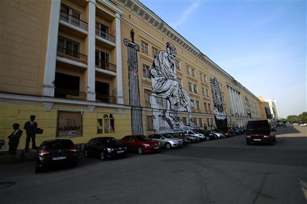

Есть определённая ирония в том, что я, человек который читает Артемия Лебедева не каждый день, но периодически уже много-много лет, совершенно забыл, что Артемий приложил к Перми руку.
Когда мы въехали в Пермь я сразу подумал… «#@елц?!;№орыв;;%!"№!"№;%, куда я попал?». Тут нужно отметить, что дорога до Перми сама по себе была не очень. Но Пермь была под стать. Казалось, что мы ехали где-то в районе расположенного в Кировском Азота, а потом бах! и центр Перми. Центр видим, но убери здание администрации и навигатор и перед нами минимум проспект Кузнецкий.
Покатавшись чуть по городу, отправились на берег Камы. Хотелось отсидеться в кафешке с кофе и вайфаем, сориентироваться на местности.
Посидели в кафе, даже поработал немного, зарядил всякие аккумуляторы и поехали кататься дальше по городу.
Вообще я считаю язычеством и свинством заниматься подобным скреплением уз. Тут это сочетание приправлено ещё и стремлением пермяков обязательно использовать краску на любых, даже сложных поверхностях.
Хуже замков ещё есть ленточки «мне понравилось, чтобы вернуться я вешаю эту тряпку, которая через месяц выгорит и станет станет частью помойки». Такая инсталляция в Перми, впрочем, тоже есть.

Среди достопримечательностей была конечно скульптура «Пермяк солёные уши». «Солёные уши» — прозвище пермяков. В крае распространена добыча соли и уши таскавших мешки с солью пермяков пропитывались по легенде солью, были красные и большие.
Пофотавшись у скульптуры, поехали гулять в горсад. Пермский горсад порадовал обилием аттракционов, правда на «американские горки с блюдцами», купив билеты, мы не попали. Там чо-то отвалилось и ждать когда отремонтируют не было ни времени ни настроения. Обошлись «Ветерком».
Легендарную красную букву «Пэ» мы так и не увидели (собственно и не искали по причине описанной в первом абзаце), зато увидели раскрашенный баллончиками город, краевой центр, выглядящий как оставленная без присмотра рабочая окраина.
Перекусив в Макдональдсе, поехали на выезд из Перми в сторону Ижевска, куда по плану, кстати, заезжать не планировали. Кстати в пермском Макдональдсе стал свидетелем того, как туда пришла целая семья иностранцев. Позвали специального кассира, который на ломаном английском принял у них заказ. Забавно было наблюдать, но иностранцев я понимаю. Примерно в Перми мы решили по возможности питаться именно сетевым фастфудом. Сетевой фастфуд это стабильное качество, высокое качество, качественное обслуживание. Знаешь альтернативу? Буду рад прочесть в комментариях.
По дороге первый раз за всю поездку покупаем у местных жителей ягоду.
В Ижевск приезжаем уже ближе к вечеру, поэтому решаем остановиться именно здесь.
Уже в Ижевске нахожу по телефону гостиницу. Гостиницей на деле оказывается специально возведённый под этот бизнес дом в частном секторе. Снимаем номер в котором всё ещё нет кондиционера, но уже есть вентилятор.
Пока Наташа кормит-умывает дочь, мы с сыном заказываем пиццу и едем поискать автомойку.
Моем машину, возвращаемся в гостиницу. Спать.
Выводы: Пермь, мягко говоря, зашумлена графитти, впечатления столицы дизайна не произвела, скорее наоборот. Кама красива. Ижевск гостепреимен.
Номер с доп.местом в виде «еврораскладушки» обошёлся нам в 2300 рублей. Малый отель Ost-Roff ул. им Вадима Сивкова, 7, +7 (3412) 77-38-55. Рекомендуем.